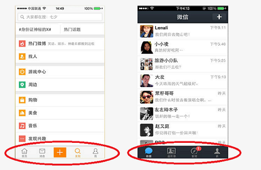

.tab-item : 使用图标
选项卡的选项默认的只包含文字，使用图标会使其更加生动：比如 微博和微信：
注意：要在某个选项元素中插入图标，需要注意两点：
1.使用i标签在.tab-item中插入图标
2.在.tabs容器上使用.tabs-icon-{position}声明图标位置。
注意：有三种方式定义图标位置：
1..tabs-icon-top - 将图标置于文字之上
2..tabs-icon-left - 将图标置于文字左侧
3..tabs-icon-only - 只使用图标，不显示文字
示例： 